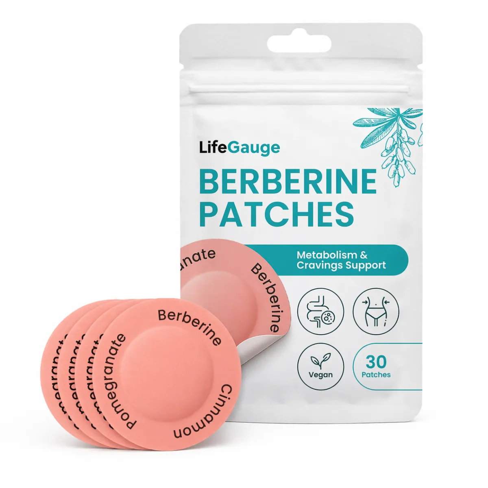
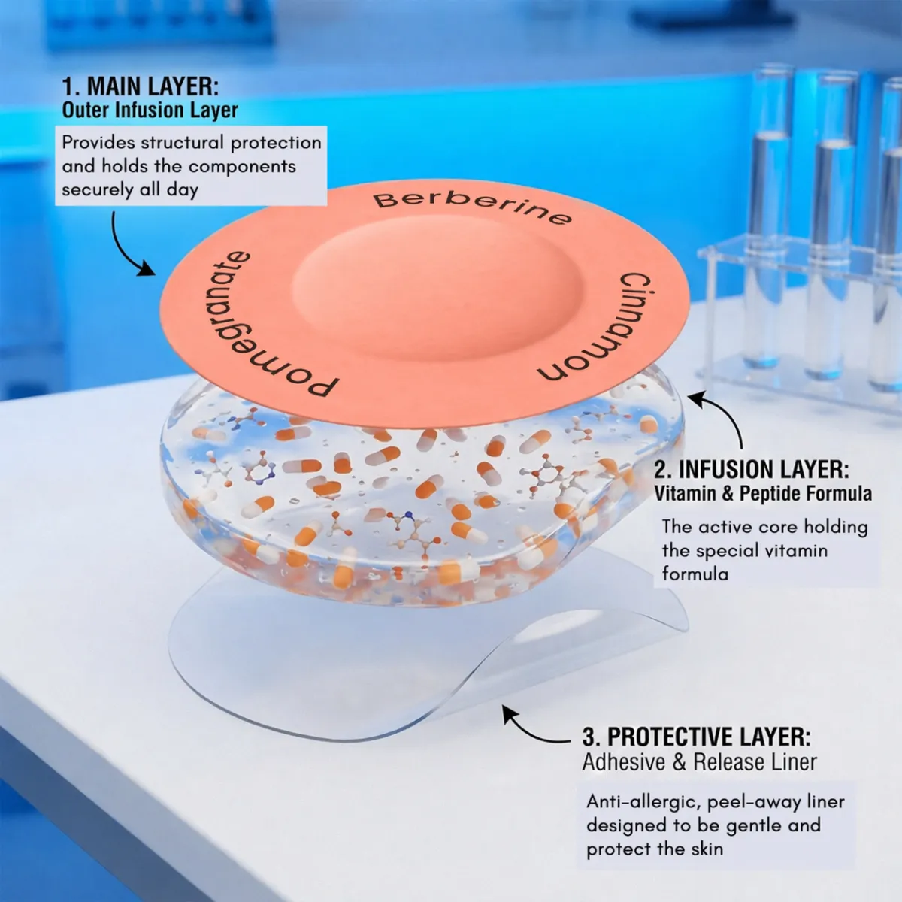
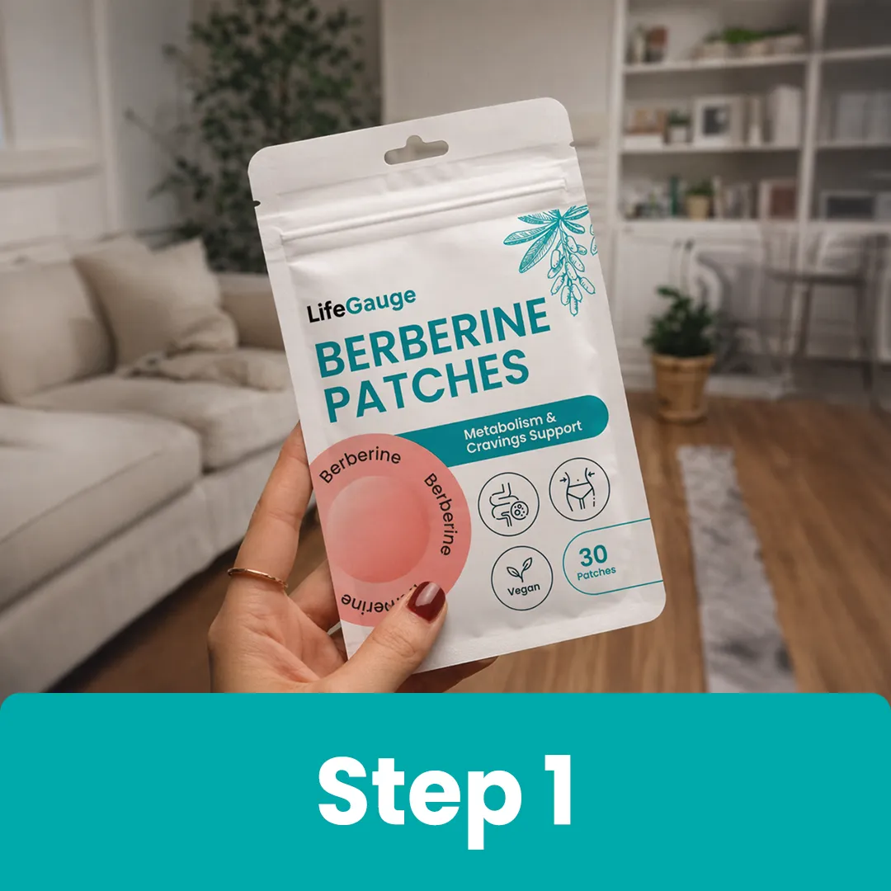
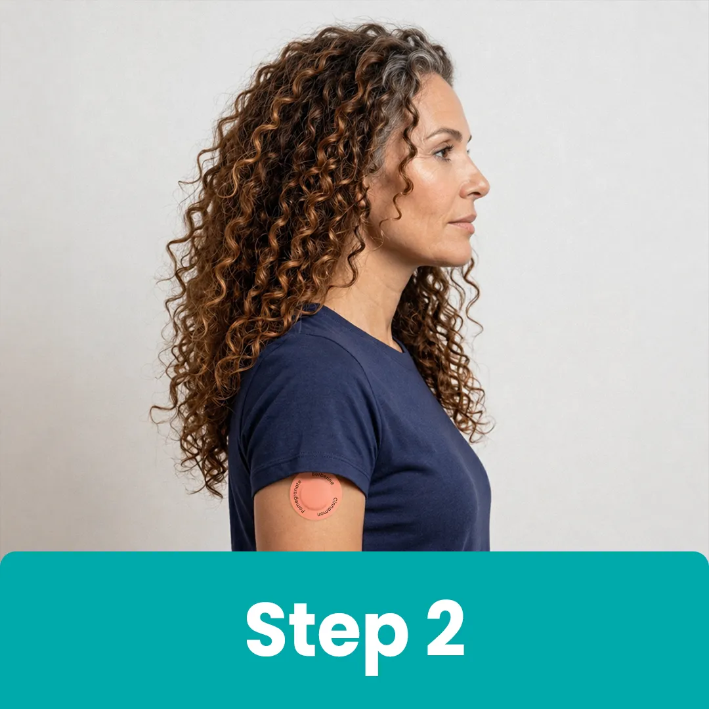
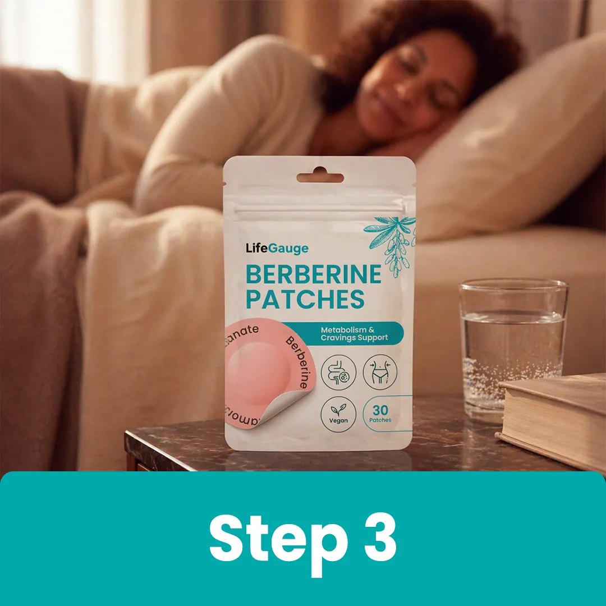
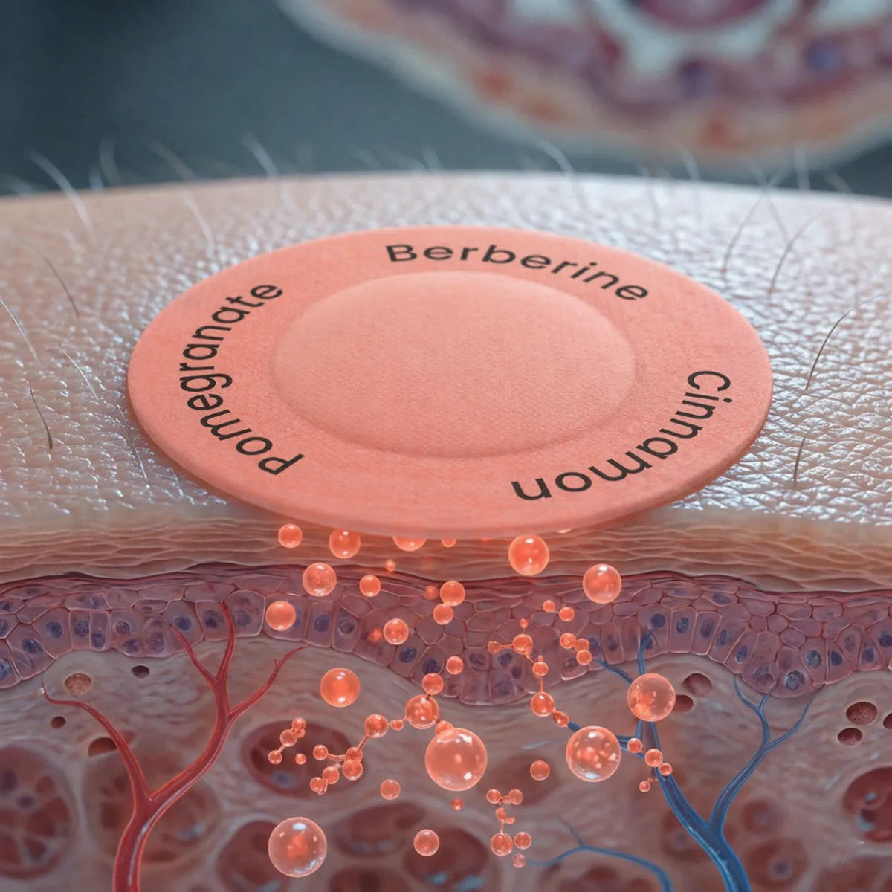

Berberine Patches are designed to support appetite awareness, metabolic balance, and your daily wellness routine with a convenient transdermal format. Made with berberine, botanical extracts, essential B vitamins, and L-glutamine, each patch delivers supportive ingredients gradually through the skin without adding another pill to your routine.


Staying consistent with your wellness goals does not have to mean complicated routines or another daily pill. Berberine Patches combine berberine, pomegranate extract, B-complex vitamins, and L-glutamine in a convenient transdermal format designed to support appetite awareness, healthy metabolism, and everyday energy.
The formula combines berberine extract and pomegranate extract with essential nutrients selected to complement your daily metabolic wellness routine and support healthy appetite awareness.
B-complex vitamins help your body convert carbohydrates, fats, and proteins into usable energy, while L-glutamine complements the formula for a convenient approach to daily metabolic and nutritional support.
The triple-layer patch format is designed to deliver key ingredients gradually through the skin, making it easy to add metabolic wellness support to your routine without complicated dosing or swallowing pills. Simply apply one patch and continue with your day.
Adding a patch to your daily routine is simple. Choose a clean area of skin, apply the patch firmly, and wear it throughout your day for convenient transdermal support.

Pick a clean, dry area of skin with little to no hair. The shoulder, hip, or inner arm can provide a convenient place to apply your patch.

Peel away the backing and press the LifeGauge patch firmly onto your chosen area of skin. Make sure it is securely attached before continuing with your day.

Wear the patch as part of your normal routine. After approximately 8 to 12 hours, simply peel it off and discard it, then use a fresh patch as directed.
Formulated with berberine, curated botanical extracts, essential B-complex vitamins, and L-glutamine, Berberine Patches are designed to complement your daily metabolic wellness routine.
Berberine Patches combine a high-potency berberine base with pomegranate extract, essential B-complex vitamins, and L-glutamine. The formula is designed to support healthy metabolism, appetite awareness, and everyday energy as part of a balanced wellness routine.

The unique patch format is designed to deliver key ingredients gradually through the skin, offering a convenient alternative to adding another pill to your daily routine. The formula includes B vitamins to complement everyday energy production and metabolic support.
Designed to be discreet and easy to wear, Berberine Patches can fit naturally into your daily schedule. Apply one patch to clean, dry skin and continue with your normal routine while the water-resistant adhesive helps keep it securely in place.
A thoughtfully selected combination of berberine, botanical extracts, essential B vitamins, and L-glutamine designed to complement appetite awareness, healthy metabolism, and everyday energy.
Berberine is a naturally occurring plant compound studied for its role in supporting healthy metabolic pathways, including AMPK-related cellular energy processes.
Pomegranate provides naturally occurring botanical compounds that complement the formula and support antioxidant and metabolic wellness as part of a balanced lifestyle.
B vitamins help support normal energy metabolism and the body's ability to convert carbohydrates, fats, and proteins into usable energy.
L-glutamine is an abundant amino acid in the body that complements this formula as part of a convenient approach to daily nutritional and metabolic wellness support.
See what customers have shared about making Berberine Patches part of their everyday wellness routine, from convenient application to supporting appetite awareness and daily metabolic wellness.
"The patch is so easy to use. I just apply it in the morning and go about my day without having to remember another pill. It fits into my routine really well."
"I ordered three packs during the sale and have really enjoyed how simple they are to use. The patch is discreet, and I like having an easy addition to my daily wellness routine."
"I put one on before heading to work and barely notice it during the day. I appreciate not having to carry another bottle around or interrupt my routine."
Get straightforward answers about Berberine Patches, including how they work, daily use, application, expected results, and what comes with your order.